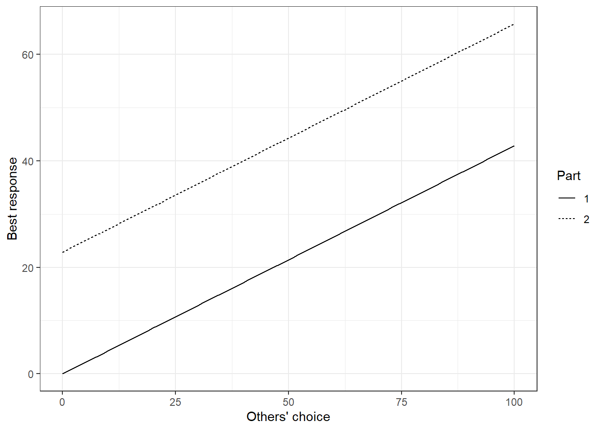

10 Guessing Game
Information about this game can be found in Chapter 6 of Holt’s Markets, Games, and Strategic Behavior.
10.1 A description of what happened
In Part 1, you were asked to choose a number between 0 and 100 (inclusive). A monetary prize was awarded to the person who chose closest to \(1/2\) of the average (mean) of your group’s choices. We repeated this task several times.
In Part 2, you were asked to choose a number between 0 and 100 (inclusive). A monetary prize was awarded to the person who chose closest to 20 plus \(1/2\) of the average (mean) of your group’s choices. We repeated this task several times.
10.2 Your homework assignment
Download the data from the experiment and answer the following questions:
Suppose that you knew for sure that everybody else will choose \(x\) (a number between 0 and 100). What should you choose? Show your answer in a plot with \(x\) on the horizontal axis, and your choice on the vertical axis. You have just calculated a best response! We will get back to this when we study game theory. Do this for both parts of the experiment.
There is a number such that if everybody else chooses this \(x\), you want to choose \(x\) also. Find this number and explain your working. You can solve this either analytically (i.e. pen paper) or computationally (e.g. with Excel, R, Stata, etc). The explanation is the important part.
Based on your answer to part (2), what would Nash equilibrium predict if we increased the group size?
Create a plot showing the average choice on the vertical axis, and the round number on the horizontal axis. Show the Nash equilibrium predictions on this plot.
Compare your theoretical predictions (i.e. questions 1 & 2) to the plot in question (4). What do you think is going on?
(6260 students only): Test whether or not the means between the two parts are different. State your assumptions. Comment on how appropriate they are.
10.2.1 Solutions
10.2.1.1 1 - Best response
If I choose \(y\) and everyone else chooses \(x\), then the average is: \[ \frac{\text{my choice}+(n-1)(\text{others' choices})}{n}=\frac{y+(n-1)x}{n} \] In Part 1, we want to choose a \(y\) that is equal to \(1/2\) of this number, so this sets up the equation: \[ \begin{aligned} y^*=\frac12\frac{y^*+(n-1)x}{n} \end{aligned} \] Note that \(y*\) is on the left- and right-hand side, so we need to solve for \(y^*\): \[ \begin{aligned} 2ny^*&=y^*+(n-1)x\\ y^*(2n-1)&=(n-1)x\\ y^*&=\frac{(n-1)x}{2n-1} \end{aligned} \] Note that for any group, \(n\geq2\), so we are not dividing by zero.
For Part 2, we need to choose as close as possible to 20 plus half the average. In math, we want to solve: \[ \begin{aligned} y^*&=20+\frac12\frac{y^*+(n-1)x}{n}\\ 2ny^*&=40n+y^*+(n-1)x\\ y^*(2n-1)&=40n+(n-1)x\\ y^*&=\frac{40n+(n-1)x}{2n-1} \end{aligned} \]
So getting these into plots
library(dplyr)
library(tidyr)
library(ggplot2)
x<-seq(0,100)
n<-4
y<-(n-1)*x/(2*n-1)
PlotThis<-data.frame(x,y)
PlotThis$Part<-"1"
tmp<-PlotThis
tmp$y<-(40*n+(n-1)*x)/(2*n-1)
tmp$Part<-"2"
PlotThis<-rbind(PlotThis,tmp)
plt1<-(ggplot(PlotThis,aes(x=x,y=y,linetype=Part))
+geom_line()
+theme_bw()
+xlab("Others' choice")
+ylab("Best response")
)
plt1
10.2.1.2 2 - Nash equilibrium
In both parts, we are looking for a solution for \(y^*=x\). That is, if everyone else is choosing \(x\), I also want to choose \(x\).
For Part 1, this sets up the equation: \[ x=\frac{(n-1)x}{2n-1} \] so \(x=0\) is the Nash equilibrium of this game.
For Part 2, we have: \[ \begin{aligned} x&=\frac{40n+(n-1)x}{2n-1}\\ x(2n-1)&=40n+(n-1)x\\ x\left((2n-1)-(n-1)\right)&=40n\\ nx&=40n\\ x=40 \end{aligned} \] Graphically, we are looking for an intersection of our best response curves with the \(45^\circ\) line, (i.e. \(x=y\)):
plt2<-(plt1
+geom_abline(slope=1,intercept=0,color="red"))
plt2
10.2.1.3 3 - Group size
\(n\) does not appear in the Nash equilibrium prediction, so Nash predicts that nothing will change if we increase the group size.
10.2.1.4 4 - Data
This plot is overkill, I’m not expecrting you to have something with box plots and loess smoothing. You can see the data’s means in the middle lines of the box plots.
library(readxl)
library(dplyr)
T1<-data.frame(read_excel("PS01-GuessingGame.xlsx",sheet="Treatment1")) %>% select(c("Round","Guess"))
T2<-data.frame(read_excel("PS01-GuessingGame.xlsx",sheet="Treatment 2")) %>% select(c("Round","Guess")) %>% mutate(Round=Round+10)
T1$Part <-1
T2$Part<-2
D<-rbind(T1,T2) %>% mutate(
Round=as.factor(Round),
Guess=as.numeric(Guess)
)
Round<-seq(1,10)
Part<-paste(1+(Round>=6))
MeanChoice<-c(50,30,20,10,1,10,20,50,48,40)
Nash<-(Round>=6)*40
plt3<-(
ggplot(D,aes(x=Round,y=Guess))
+geom_smooth(formula = y ~ x, method="loess",aes(group=Part,color="Data"))
+geom_boxplot(alpha=0.7,aes(color="Data"))
+theme_bw()
+geom_vline(xintercept=10.5,color="black",linetype="dashed")
+geom_segment(aes(x=1,y=0,xend=10,yend=0,color="Nash"),size=2)
+geom_segment(aes(x=11,y=40,xend=15,yend=40,color="Nash"),size=2)
+theme(legend.title=element_blank())
)
plt3
10.2.1.5 5 - Comparison
In both parts, choices seem to be trending in the direction of the Nash equilibrium. Especially in the first part, there is a large gap in the early rounds between the prediction and choices.
10.2.1.6 6 - Statistical test (6260 students only)
Here I will use linear regression.
library(stargazer)
library(sandwich)
D<-(D%>% mutate(InvRound = 1/(as.numeric(Round)-10*(Part==2)))
%>% mutate(Trend1 = InvRound*(Part==1),Trend2 = InvRound*(Part==2))
)
R1<-lm(Guess~ (Part==2) ,data=D)
se1<-sqrt(diag(vcovHC(R1,type="HC1")))
R2<-lm(Guess ~ (Part==2)+Trend1+Trend2,data=D)
se2<-sqrt(diag(vcovHC(R2,type="HC1")))
stargazer(R1,R1,R2,type="html",se=list(NULL,se1,se2))| Dependent variable: | |||
| Guess | |||
| (1) | (2) | (3) | |
| Part == 2 | 17.043*** | 17.043*** | 26.156*** |
| (3.017) | (2.331) | (3.595) | |
| Trend1 | 22.956*** | ||
| (7.273) | |||
| Trend2 | -4.652 | ||
| (5.771) | |||
| Constant | 17.392*** | 17.392*** | 10.404*** |
| (1.738) | (2.054) | (2.924) | |
| Observations | 196 | 196 | 196 |
| R2 | 0.141 | 0.141 | 0.198 |
| Adjusted R2 | 0.137 | 0.137 | 0.186 |
| Residual Std. Error | 19.888 (df = 194) | 19.888 (df = 194) | 19.318 (df = 192) |
| F Statistic | 31.904*** (df = 1; 194) | 31.904*** (df = 1; 194) | 15.807*** (df = 3; 192) |
| Note: | p<0.1; p<0.05; p<0.01 | ||
The specification I use in column 1 is equivalent to the 2-sample \(t\)-test with different variances. Column 2 is the same as column 1 except using heteroskedasticity-robust standard errors. Column 3 adds in some “early round” effects. I.e. \(\text{Trend1}=1/\text{Round}\), which approaches zero as many rounds are played. In all regressions, the coefficient of interest is “Part==2”, which is the estimate of the difference in means between the second and first part (after time trends become negligible in column (3)). Note that adding this to the constant gets the regression’s prediction for Part 2, which is about 35 (not too far away from Nash). In all cases we reject the null hypothesis (both one and two-sided, at all sane levels of significance) that the two parts have equal means.
The assumptions required for Column (2) are:
- The error term is uncorrelated with Part. This is plausible because Part was a variable chosen by the experimenter (i.e. it is exogenous)
- The error term is independent. This is almost certainly wrong:
- It is likely that a participant’s errors are correlated, which could be fixed with clustering at the participant level (we can’t do this because we can’t link IDs across each part)
- It is likely that errors are correlated within groups playing together. We can’t account for this because we only had one group in the 2nd part.
- The variance of the error term in the regression is finite.